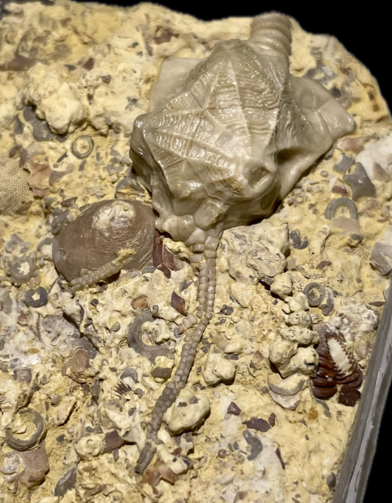

CRINOIDS


Ordovician
Silurian
Devonian
Mississippian
Pennsylvanian✻


Email: samkimpaleo@gmail.com
Instagram: https://www.instagram.com/skfossils
CRINOIDS |
||||
|---|---|---|---|---|
|
|
|
|
|
|
Ordovician |
Silurian |
Devonian |
Mississippian |
Pennsylvanian✻ |
|
|
|
|
|
|
Permian |
Triassic |
Jurassic |
Cretaceous |
CENOZOIC |
OTHER FOSSILS |
||||
|---|---|---|---|---|
Other Echinoderms |
Cambrian Life |
Other Invertebrates |
Vertebrates |
Miscellaneous |
|
 |
 |
|
 |
|
Fossils For Sale |
|||||||
|---|---|---|---|---|---|---|---|

|

|

|

|

|

|

|

|
|
Edmontosaurus regalis • Cretaceous • Horshoe Canyon Formation • Alberta-Drumheller, Canada |
Indet. Millipede • Pennsylvanian • • Crock Hey Open Cast, Wigan, Lancashire, UK |
Clematocrinus retiarius • Silurian • Wenlock Limestone Formation • Wren's Nest, Dudley, UK |
Indet. • Pliocene • • Florida Everglades, South Florida, USA |
Xyloiulus sp. • Pennsylvanian • Francis Creek Shale, Carbondale Formation • Mazon Creek, Illinois |
Indet. Sauropod • Jurassic • Morrison Formation • Utah, USA |
Barycrinus stellatus • Mississippian • Edwardsville Formation • Monroe Co., Indiana, USA |
Ornithomimus sp. • Cretaceous • Belly River Group • Red Deer River, Alberta, Canada |
| Key for Open Nomenclature | |
|---|---|
| indet. | Unidentified, or a potential new/undescribed taxon |
| sp. | Same as "indet." but at the species level |
| ? | May be the same taxon |
| cf. | Likely the same taxon, but insufficient information/confidence to determine conclusively |
| aff. | Likely new/undescribed, but shows similarities to the established taxon in addition to key differences |
Copyright © 2024 by Samuel Kim, all rights reserved